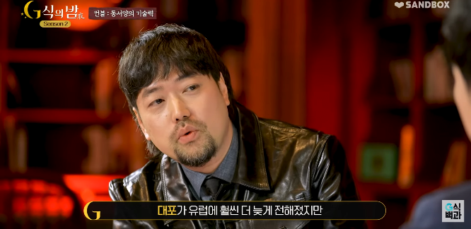
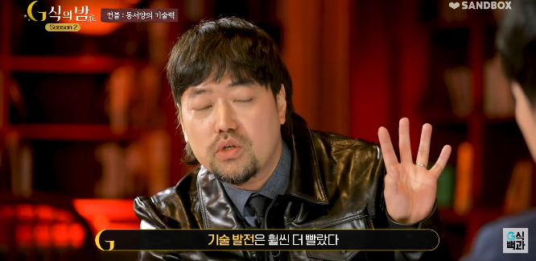
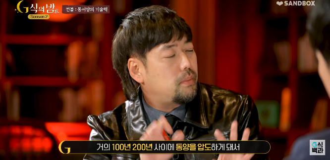
왜 동양이 빨랐는데 유럽에 뒤쳐진거죠?
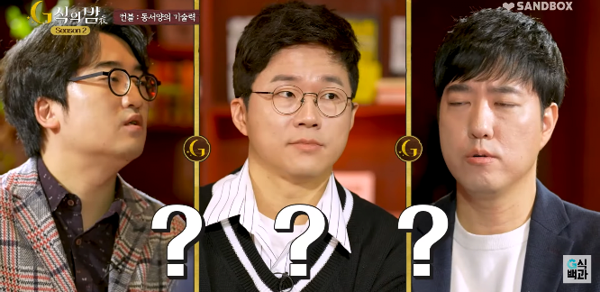
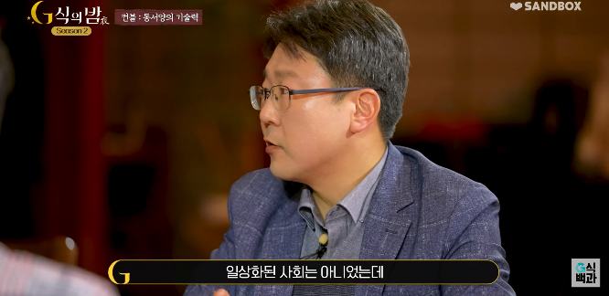
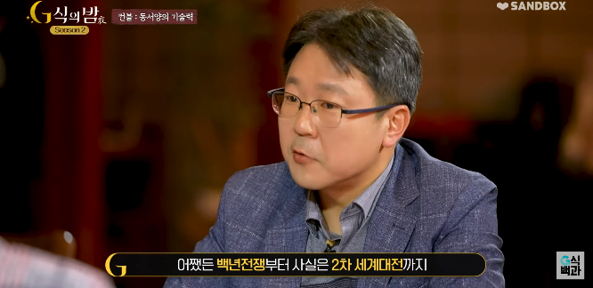
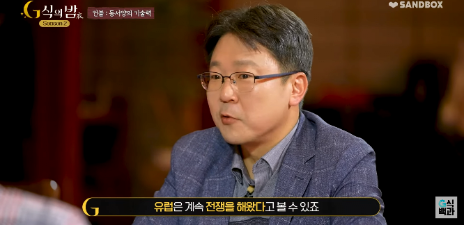
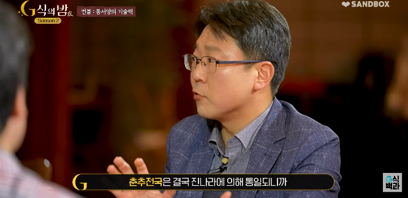
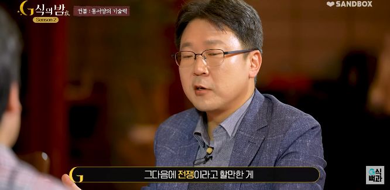
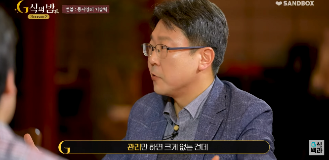
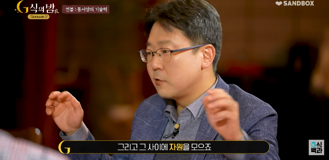
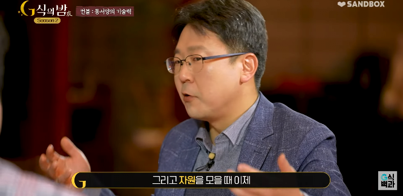
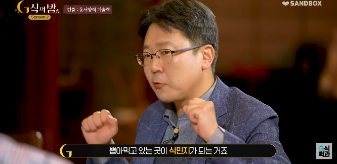
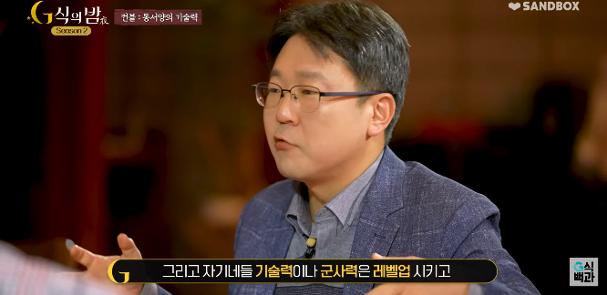



왜 동양이 빨랐는데 유럽에 뒤쳐진거죠?











전국시대랑 개화기가 거의 200년 차이나는데 그건 상관없는건가?
그럼에도 여전히 각번이 자기 정부가 독립적으로 남아있었고 자기살길 찾으면서 경쟁함 결국 막부도 에도번이 주도권을 잡은 것뿐이라, 시기노리고 있던 사쓰마랑 조슈 또 어디더라 나머지가 자체적으로 근대화하면서 격차 벌인거지, 조슈전쟁, 사쓰에이전쟁 시모노세키전쟁...보신전쟁, 금문변..
심지어 2차대전때 일본 육군과 해군이 사이가 안좋았던 이유도 봉건제의 영향이 남아있었기 때문임..
그래서 육군이 자체적으로 항모만드는 뻘짓도 함..
해상무역과 세계에 대한 세계관의 인식차이 아닐까
총
균
쇠
저런 질문자체가 아시아권이 유럽에게 열등감이 있다는 소리지
현실은 산업혁명은 기원전부터 시작되는 그리스,로마 문명이 포텐이 터진거임
산업혁명 아니었으면 여기 태반이 태어나자마자 반절은 죽고 나머지는 평생 까막눈에 농사꾼임
나는 로마랑 그리스 문명이 고구려, 부여보다 앞선거 보고 아... 옛날부터 먼저 발생한거였구나 느끼게됨
원래 그쪽이 사람이 먼저 살았으니까 문명이 먼저 생긴것도 자연스러운일임
그리고 유럽이 시발 진짜 축복받은 땅이더라 미국도 개사기 땅이긴한데 유럽도 만만치 않음 ㅋㅋㅋㅋ
일단 강수량이 일정해서 홍수같은거 거의 업고 그리고 미국도 허리케인이 있고 아시아는 태풍이 있는데 유럽은 그런곳도 없음 겨울에도 그닥 춥지 않음 진짜 개꿀땅이 유럽임.
아 그리고 심지어 메뚜기떼같은 재앙같은 해충이나 모기등도 적어서 전염병조차 적음
이번에 나온 오딧세이가 고조선보다도 천년전 예기라는거 듣고 어이가 없더라 ㅋㅋㅋ ㅅㅂ 진나라보다도 전이고 ㅋㅋㅋ
저걸 달리말하면 서로가 서로를 의식하고 끊임없는 교류를 해왔다는거임
그게 전쟁과 상업이라는 형태로 나타나는거고
서양이 올라오는 저 시기 동아시아는 명나라 주도하에 해금령이 이뤄지고 조선 상업은 자빠지고
뭐 일본 전국시대, 임진왜란 있기야하지만 사실 그이후에 일본도 문걸어잠그고
전반적인 분위기가 내부 통치만으로도 버거워서 외부 교류를 틀막하는 방향임
왜냐 중국은 해외로 나가지 않아도 필요한 온갖 물자들이 국가 안에서 생산되거든 ㅋㅋ 영국 방직공장에서 나오는 옷감보다 청나라에서 가내수공업으로 생상되는 옷감의 양이 더 많았다았다고 하니까 ㅋㅋㅋ
ㅇㅇ 거기에 일본도 비슷하게 굴러가서 왜란전까진 유사 유럽마냥 굴면서 주변부 죄다 씹창내고 다녔는데 통일하고 체급올라오니까 문걸어잠금
분명 동아시아의 분위기가 몽골 이전엔 달랐다고 생각하는데 몽골이 한번 정상화 시키고나서부턴 너무 체급들이 커져서...
유럽 다한거랑 그시절 중국하나랑 비슷해서 교류량은 비슷했을거 가틈
그래서 중국혼자 내전만 벌여도 미친듯이 폼이 올라왔지
정확히는 한족국가와 유목민족들이지만..
전쟁하면 생산량 떡락하고 삶 팍팍해지고 힘들어지는 거 아닌가 싶은데
아이러니하게도 그럼 거기서 좆같다고 외부로 퍼져나가거든 그럼 중국의 기술들이 외부로 퍼지고 또 교류가 일어나고
전쟁에서 이겨야하니까 있는거 없는거 다쥐어짜서 테크올리고
뭐 그런거지
다만 동아시아는 좀 극단적인게 유럽은 wwe가 좀 많았는데 동아시아는 어지간해선 총력전 멸망빵이었다는거..
아무튼 이러나저러나 몽골이 동아시아를 한번 정리한게 제일 컸던거 같음
적어도 송 금 으로 나뉘어 있었더라면, 한족국가와 유목국가 두가지가 계속 존재했더라면 달라지지 않았을까 그런 생각을 해봄
원래 전란이 많으면 교류가 빠르고 발전도 빠름
전란속에서 비효율적인 집단이나 국가는 금방 무너져버림
안정과 평화는 비효율과 병폐가 쌓이면서 내부부터 많이 썩어들어감
동양은 중국 통일왕조 나올 즈음부터는 이민족에게 무너지지 않는 한
문자 그대로 중화사상으로 안정과 평화를 추구하는 성향이 강했음
농본주의 국가에서 그 다음의 형태로 바뀔 여지 자체가 없는 거지
중국 통일왕조가 천년을 가도 바뀔 것이 없음. 어차피 그냥 계속 공자 맹자 주자왈 했을거
둠피스트님... 당신이 옳았습니다... 인간은 전쟁을 통해서만 발전하나 봅니다...
삼체인들이 유럽인이라는건가
결국 저 전쟁과 무역이 의미하는 바를 잘 해석해야 된다고 봄. 단순히 피흘린다? 사람이 갈려나간다? 가 아님
실용주의 우선이기도 하고, 이를 위해 기득권의 병폐를 시원하게 치워버리니까 발전하는거
전에 이걸 생각해 본 적이 있는데 결론은 중국은 진시황이 통일한 이후로 계속 통일된 상태를 유지하려 했고 유럽은 로마라는 통일의 경험이 있었지만 끝내 분열됐다는 거였음 그 원인은 잘 모르겠더라
로마는 영국 북부, 독일지역, 북유럽 지역을 아예 먹은 적이 없음
그리고 영국은 계속 새 민족이 들어와서 초기화됐고
다른 지역도 바이킹이 밀려온 건 마찬가지
지중해 남부부터 유럽까지 워낙 방대해서 하나의 제국으로 묶일 수가 없음
중국과는 다른 케이스
이번에 드러난 유럽 기후를 보니까 사계절의 기후를 몸빵으로 버틸만해서 꿀빨한 거 아닐까 싶기도 함
일년내내 계속 뭔가를 굴릴 수 있는 동력 그 자체가 동양이랑은 다른 거지
발전은 도전에서 옴
이 문장 모르면 역사 공부한 사람 아님..
대항해시대 서양의 도전사를 보면 ㄹㅇ 미친놈들 아닌가 함
저 이유만으로 설명할 수는 없을 거 같은데....
하지만 결국 모두에게 비슷한 기술이 제공되면서 아시가가 유럽을 넘었지... 물론 시민의식 같은 건 아직 한참 뒤쳐진 나라도 많지만.
근데 솔직히 아시아가 유럽을 넘었다는 말은 잘못된 말이고 (한국,일본,중국)이 유럽을 넘었다는 게 맞지.
군사력이나 경제 등등 따지면 미국 제외하면 솔직히 유럽은 딱히 무섭지 않지
맞음 17세기까진 동아시아가 유럽보다 훨씬 문명적이었지
17세기는 근데 어느 기준으로 얘기하는거야?
유럽이 아시아를 능가하게 된 계기가 18세기 산업혁명이고 그 전에는 유럽은 중세 암흑기에서 막 벗어나기 시작할때이니
https://www.dogdrip.net/716897042
산업혁명 이전에도 이미 과학 기술 분야는 서양이 동양을 앞질렀어.
그리고 르네상스가 14, 15세기 부터 시작했는데 그전까지 암흑기에서 막 벗어났다고 하는 말엔 동의를 못하겠네
가까운 중국과 우리나라 일본만 보더라도...일본이 중국과 한국보다 근대화가 빨리 진행되 둘다 한번 먹혔던 이유도 위치적인 이유도 있겠지만 저 이유도 있을거같음. 한국과 중국이 1개의 국가로 경쟁없이 평화안에서 안주해 지내왔다면 일본은 각 지역별 자치령이라 내부에서 끊임없는 전쟁과 경쟁을 겪으며 발전을 해왔어서 새로운것을 받아들이는데 더 열려있었고, 경쟁적인 발전이란 부분에 더 민감했을듯. 임진왜란도 전국시대를 거친 일본과 전투력에서 큰 차이가 있을수밖에 없었음.